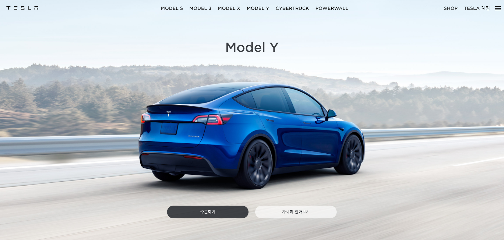
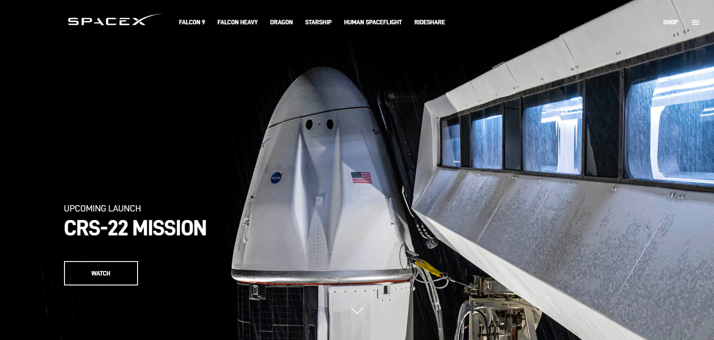
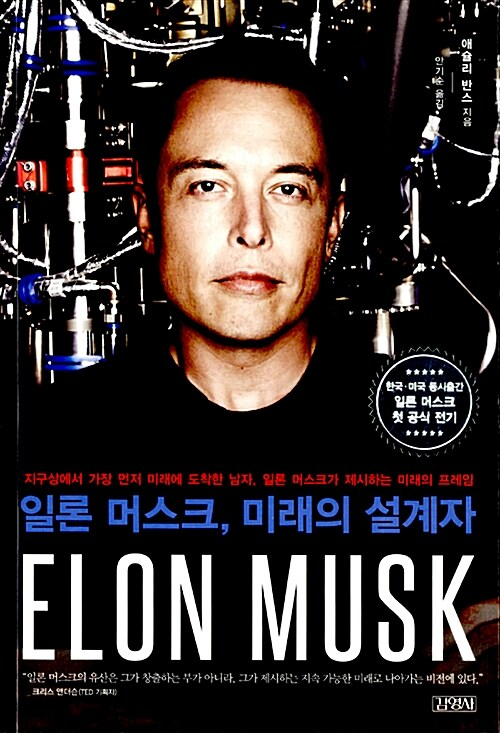
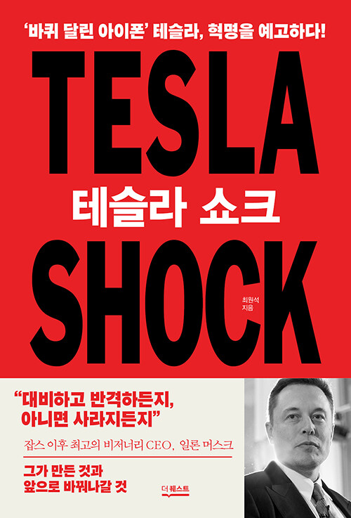

-
Elon Reeve Musk
-
일론 리브 머스크는 남아프리카 공화국 출신인
미국의 기업인입니다. 페이팔의 전신이 된 온라인
결제 서비스 회사 x.com,민간 우주기업 스페이스X
를 창립했고, 전기자동차 기업 테슬라의 초기
투자자이기도 합니다.

테슬라 주식회사는
테슬라 주식회사는
미국 캘리포니아주 팰로앨토에 기반을 둔
미국의 전기자동차와 청정 에너지 회사입니다.
2003년, 마틴 에버하드와 마크 타페닝이 창업했습니다.
2004년 페이팔의 최고경영자이던
일론 머스크가 투자자로 참여했습니다.
대표 모델로는 3,S,X,Y가 있습니다.

스페이스X는
스페이스X는
미국의 항공우주 장비 제조/생산 및 우주 수송 회사입니다.
본사는 캘리포니아 주 호손에 위치해 있습니다.
우주로의 수송 비용을 획기적으로 절감하고
화성을 식민지화하겠다는 목표 아래
2002년 인터넷 벤처기업 페이팔의 창업자인
엘론 머스크에 의하여 설립되었습니다.

-
일론 머스크, 미래의 설계자
-
"'아이언맨'의 실존 모델, 그의 첫 공식 전기"
<타임>의 '가장 영향력 있는 세계 100대 인물'
커버스토리를 장식하고, <포춘>이 ' 2013년 비즈니스
분야 톱 인물' 1위로 꼽았던 이. 지금 세계에서
가장 주목받는 사업가이자 과학자 그리고 모험가,
일론 머스크 ELON MUSK의 첫 공식 전기다.
Zip2, 페이팔, 테슬라 모터스, 스페이스 엑스,
솔라시티의 성공까지 각기 다른 분야에서 모두
성공을 거두며 비즈니스의 지형을 바꿔놓았다는
평가를 받고 있는 그의 과거와 현재, 미래를
확인할 수 있는 책이다.
-
일론 머스크와 지속가능한 인류의 미래
-
일론 머스크의 지속가능한 인류의 미래를 위한
비전과 계획과 성과를 객관적인 사실과 데이터에
기반해서 살펴본다. 일론 머스크의 경영 철학과
지구 프로젝트, 우주 프로젝트, 인공지능 프로젝트를
한 권에서 다 살펴볼 수 있다.
모두가 불가능하다고 했던 비즈니스를 시작해
가능하게 만들어간 이야기는 그 자체로 심장을
뛰게 한다. 그의 미션과 도전은 인간이란 존재 자체를
위대하게 만드는 행보이다. 그리고 그러한 미션과 도전은
다시 우리에게 무한한 영감을 준다. 이 책에서는
그의 혁신적인 사고방식과 불굴의 실행력의 원천은
어디에 있는지도 자세히 살펴본다.

-
테슬라 쇼크
-
오늘날은 숫자로 보이는 재무적 성과만으로는
기업가치를 온전히 평가하기가 어렵다. 매력적인
비전과 구체적인 실행계획이 담긴 ‘파이낸셜 스토리와
공감’이 중요해진 시대다. 이 같은 변화를 가장 극명하게
보여주는 사례가 바로 테슬라다. 이 기업의 가치는
당장의 재무적 성과만으로는 설명할 수 없다. CEO인
일론 머스크의 비전으로 기업가치가 올라가고, 그렇게
높아진 가치를 기반으로 테슬라는 비전에 더 가까이
가고 있다. “투자자들은 종교처럼 테슬라와 일론 머스크를
숭배한다. 아마존을 사용한다고 베이조스를 숭배하지는
않는데,머스크는 이들에게 각별한 의미를 갖는다. -
머스크에 대한 숭배는 계속될 것이며, 투자 전명 역시 밝다. ” 미국 CNBC 간판
경제분석가인 짐 크레이머의 분석이다. 모빌리티·에너지·통신이 하나로 통합돼
강력한 경쟁력을 갖게 됐을 때 기존 산업이 받게 될 충격이라고 볼 수 있다.
테슬라의 비전은 과연 무엇이길래 자동차 업계뿐 아니라 다양한 산업군을 긴장시키고,
수많은 사람들을 홀리는 걸까. 신간 《테슬라 쇼크》는 테슬라가 세계 경제와 산업,
특히 한국의 경제·산업·고용 등에 몰고올 위기와 기회를 분석한다. 제목인 ‘테슬라 쇼크’는
인류의 3대 산업군인 모빌리티·에너지·통신이 하나로 통합돼 강력한 경쟁력을
갖게 됐을 때 기존 산업이 받게 될 충격이라고 볼 수 있다.